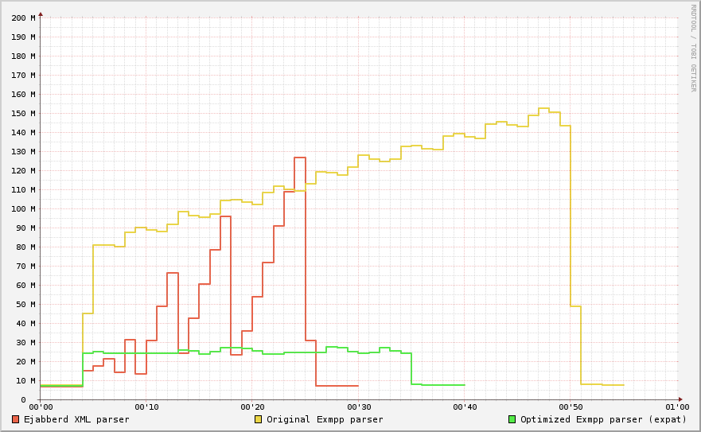

Features
exmpp is a fast and scalable library for the Extensible Messaging and Presence Protocol (XMPP) written in Erlang/OTP. exmpp main features:
Efficiency
This graph shows the memory consumption of the parser for 900 parsers doing 1000 small XML parsing each. Memory consumption and CPU consumption is very stable, compared to both ejabberd and previous version of exmpp. This comparison takes only the parsing consumption into account not the processing of the result. The result of the parse is dropped immediately. The benefit is bigger for real life system, as the internal structure of exmpp are atoms and binaries.
Roadmap
- More code helpers (for example for Multi-User Chat packets (MUC)).
- More helpers for writing pubsub clients.
Download
Source packages of released versions and daily snapshots are available at download.process-one.net/exmpp.
- Git repository with the development source code, see exmpp Git repo or exmpp on GitHub:
git clone git://git.process-one.net/exmpp/mainline.git exmpp
- Old Subversion repository is still available for historical reasons, but not updated anymore. Can be browsed online at ProcessOne forge or download with:
svn co http://svn.process-one.net/exmpp/trunk exmpp-trunk
Installation
- Download a released version or a snapshot from download.process-one.net/exmpp
- Make sure you have the following dependencies installed:
- Erlang/OTP R12B-5 or later version
- expat (tested with version 2.0.1)
- Type the following commands:
autoreconf -i ./configure make sudo make install
Installation from Git
You must have the latest version of the autotools, Erlang/OTP R12B-5 or later version and expat (tested with version 2.0.1).
git clone git://git.process-one.net/exmpp/mainline.git exmpp_mainline cd exmpp_mainline autoreconf -i ./configure make sudo make install
Troubleshooting
If you get this error message while compiling exmpp:
{"init terminating in do_boot",
{undef,[{make,all,[]},
{erl_eval,do_apply,5},
{erl_eval,expr,5},
{init,start_it,1},
{init,start_em,1}]}}
it means it couldn't find in your system the file make.beam, which is part of Erlang/OTP.
If you use Debian or a related distribution: in older versions this file was included in the package erlang-nox, and in recent versions it is in erlang-tools. Of course, the package erlang-dev is also needed for the actual compiler.
Documentation
- exmpp API documentation
- Scalable XMPP bots with Erlang and exmpp (by Pablo Polvorin):
- Tutorial Part I: Data structures, Basic API, Non-blocking parser, Streams.
- Tutorial Part II: Introducing the bot, Data Model, Component setup, User registration, ejabberd setup, Lets test it, On the wire, Handling HTTP requests.
- Tutorial Part III: User subscription revisited, React to presence changes, Web page, Microblogging.
- Sending and receiving stanzas using EXMPP (by Paolo D'Incau)
Support
You can ask, comment and discuss about exmpp in three places:
- Forum: P1 Labs forum
- Mailing list: ejabberd mailing list at jabber.ru
License
exmpp is released under the Erlang Public License 1.1 (EPL). A copy of the file EPLICENSE is included in the exmpp source code packages, and also available for online view as EPLICENSE in exmpp Git, and as EPLICENSE in the Erlang home page.